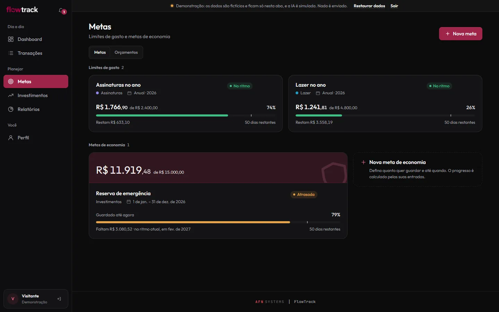

FlowTrack
Personal finances with automatic categorization.


On this page: 01Why it exists
Why it exists
I always found it hard to keep track of my own finances. Filling in spreadsheets was tedious and tiring, and the apps charged monthly fees I didn’t want to pay. So I developed my own finance organizer, built around my needs, combining the best of the tools I knew.
Problem, system, and proof
Problem
A spreadsheet that was tiring to fill in; an app with a monthly fee.
System
Personal finances with automatic categorization in 3 layers (rules, cache, and a language model); imports statements from 4 banks, OFX, and CSV.
Proof
303 tests
255 backend, 8 frontend, and 40 end-to-end. Checked on 9 Nov 2026.
A closer look
-
Categorizes in 3 layers
Rules first, then cache; only what is left goes to a language model.
-
Statements from 4 banks
Imports statements from 4 banks, plus OFX and CSV files.
-
Reports
Income, expenses, and balance, spending by category, and the largest expenses.
-
The month on a phone
On a phone, the monthly summary shows balance, income, expenses, and categories on a single screen.


How it was built
Architecture
I split FlowTrack into three parts: a React 19 and TypeScript frontend, a FastAPI REST API (/api/v1), and a PostgreSQL database on Supabase, with Row Level Security. The API saves each transaction right away and, if it has no category, adds an item to the categorization_queue table. A worker, called through the internal route /internal/process-queue, categorizes the queue in batches of 20. In demo mode, Axios swaps the network for an in-memory API in the browser.
View in code: README.md L62–83 imports.py L74–95 internal.py L15–19 claude_api.py L81–100 services.ts L25–34
- Imported statement
- FastAPI API
- Categorization queue
- Rules, cache, and Haiku
- Dashboard and reports
Technical decisions
Categorization in a queue, outside the import
Importing doesn't wait for the AI: each transaction without a category becomes a
pendingitem incategorization_queue, and the worker processes the queue 20 at a time when the internal route is called. It takes the batch with a SQL function that usesFOR UPDATE SKIP LOCKEDand marks the items asprocessing, so two calls at the same time never get the same item. I recorded the reason for the queue in ADR 0004: the import stays immediate, and the category arrives later. The visible consequence is that the transaction shows no category until the next run. If the call to the model fails, the item goes back to the queue and gets up to 3 more attempts; after that, it staysfailed.View in code: transactions.py L84–87 imports.py L92–95 claude_api.py L81–100 claude_api.py L223–228 claude_api.py L253–264 migrations.sql L96–115 test_internal_jobs.py L70–103 0004-ai-categorization-pipeline.md
The model answers through a tool
In the third layer, Claude Haiku doesn't answer in free text:
tool_choiceforces thecategorizetool, whose schema limits the category to the ones allowed for that person and the confidence to values from 0 to 1. Even so, the worker checks the answer: a category outside the list isn't saved, an invalid confidence becomes 0, below 0.85 the transaction goes to "To review", and only answers at or above that cutoff enter the cache.View in code: claude_api.py L33–67 claude_api.py L175–216 _helpers.py L167–169 0004-ai-categorization-pipeline.md
The whole demo in the browser
The public demo used a real account on a free Supabase project; when the project was paused for inactivity, the demo went offline. So, in demo mode, the Axios interceptor swaps the transport for an adapter that serves
/api/v1/*with an in-memory implementation, kept insessionStorage. The pages can't tell the difference. The cost, recorded in ADR 0006, is maintaining the business rules twice, in Python and in TypeScript.View in code: 0006-in-browser-demo.md services.ts L30–34 index.ts L34–44
Challenge
service_role key without mixing users' data
The API accesses the database with the service_role key, which bypasses RLS. So every route checks the owner: _require_account and _require_category return 404 for another person's account or category. The worker only reads the transaction belonging to the queue item's owner and only offers the model the default categories and that person's own. To prove it, I wrote an in-memory Supabase (fake_supabase.py) whose filters really filter, and tested one user trying to reach another's data.
View in code: _helpers.py L23–40 claude_api.py L70–78 claude_api.py L111–119 fake_supabase.py L1–6 test_security.py L1–5 test_security.py L322–354
Testing
There are 255 backend tests with pytest, including authorization between users and the worker with a fake Claude; 8 frontend tests with node --test, on CSV export and the offline queue; and 40 end-to-end tests with Playwright: 20 scenarios run on desktop and on phone, against a local build of the demo. GitHub Actions runs everything on every push to main and on pull requests: in the backend, ruff lints the code before pytest and, after the E2E tests, a script measures the contrast of the badges.
View in code: README.md L143–156 test_ai_categorization.py syncQueue.test.ts export.test.ts playwright.config.ts L27–30 test.yml e2e.yml
Stack and links
Stack
React 19, TypeScript, FastAPI, Supabase/PostgreSQL, Language model, pytest, Playwright